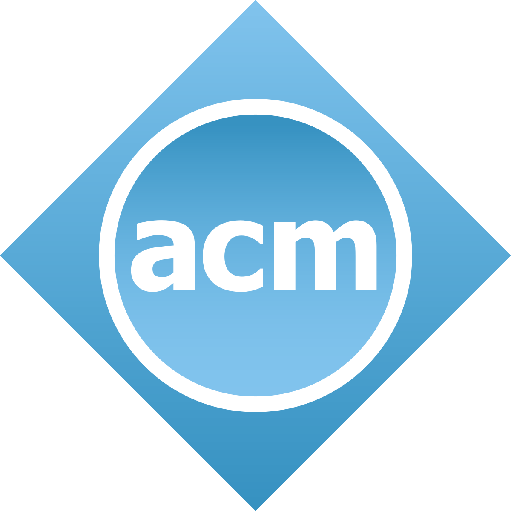

Empowering Future Computing Leaders: The Role of ACM Student Chapters
Within the vast landscape of computer science education, ACM (Association for Computing Machinery) Student Chapters serve
as indispensable catalysts for growth, innovation, and professional development. These localized hubs, affiliated with one of the world's foremost computing societies, ACM, play a pivotal role in supplementing formal education. Through
a diverse array of workshops, seminars, and technical talks, ACM Student Chapters provide students with opportunities to delve deeper into various computing domains, equipping them with the skills and knowledge essential for success
in the rapidly evolving tech industry. Moreover, ACM Student Chapters foster collaboration and networking among students, industry professionals, researchers, and alumni. By organizing hackathons, coding competitions, and collaborative
projects, these chapters create platforms for students to collaborate, innovate, and apply their knowledge to real-world problems. Additionally, through industry talks, career fairs, and mentorship programs, ACM Student Chapters facilitate
valuable connections and provide guidance to students as they navigate their academic and professional journey. Furthermore, ACM Student Chapters prioritize community outreach and social responsibility. Many chapters engage in activities
such as organizing coding camps for underprivileged youth, volunteering at local schools, and participating in community service projects. By leveraging their technical expertise for the greater good, students not only contribute to
society but also cultivate essential traits such as social responsibility and empathy, preparing them to be well-rounded professionals in the ever-changing landscape of computing.